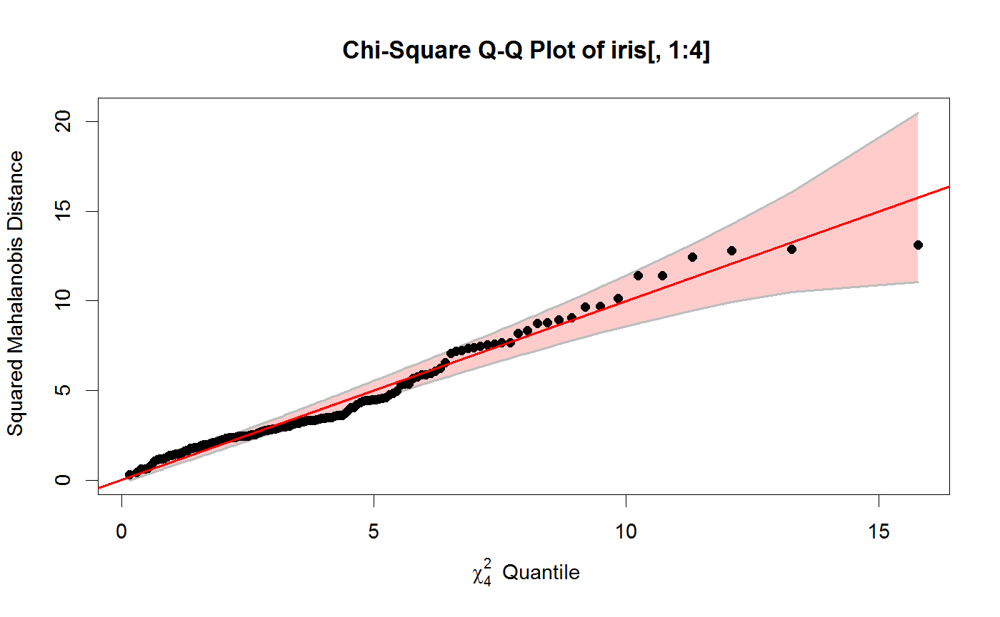
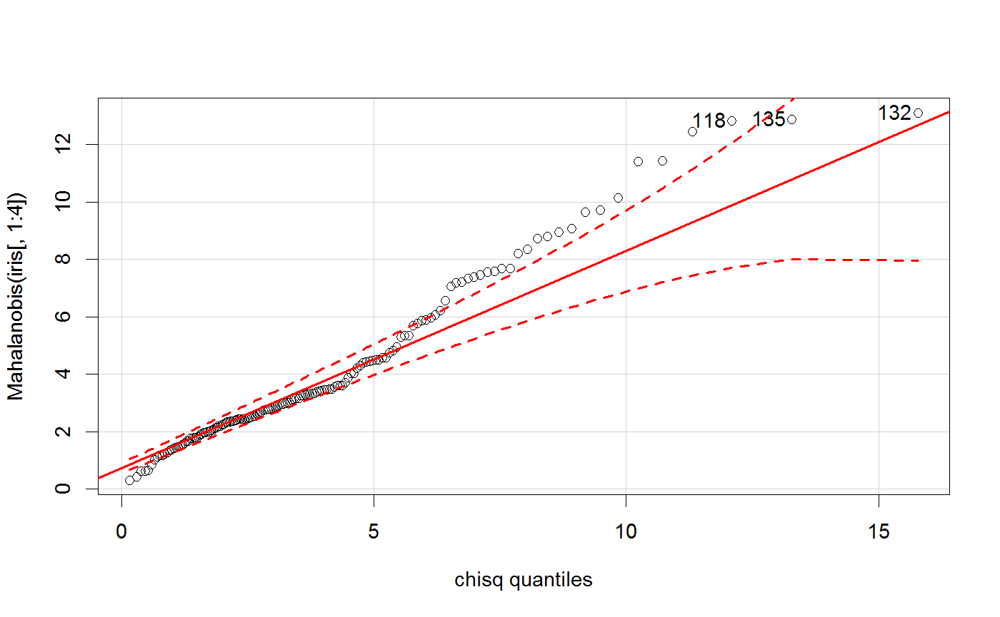
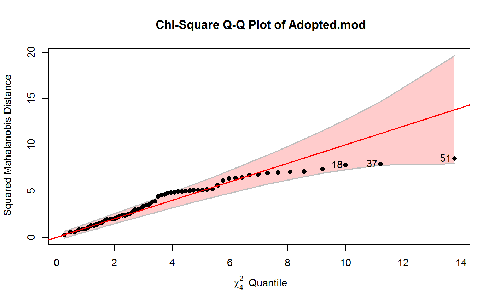
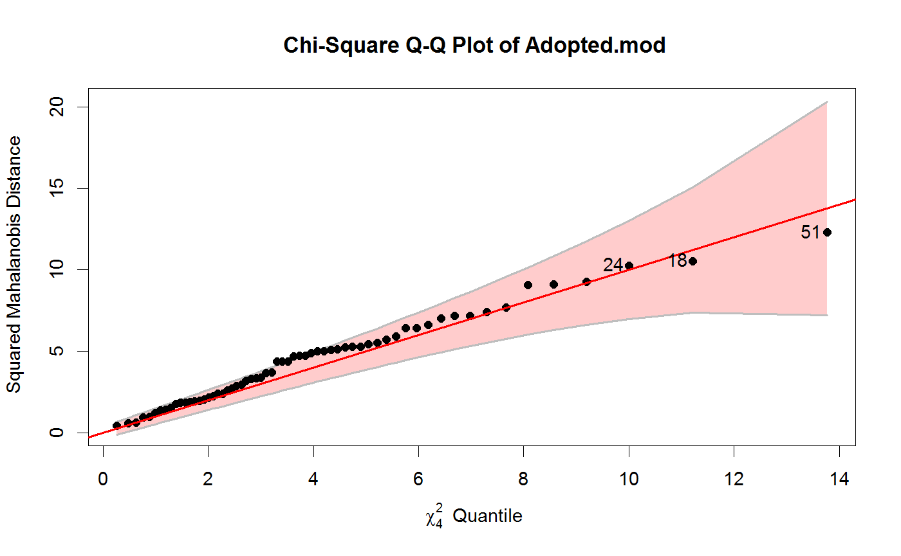
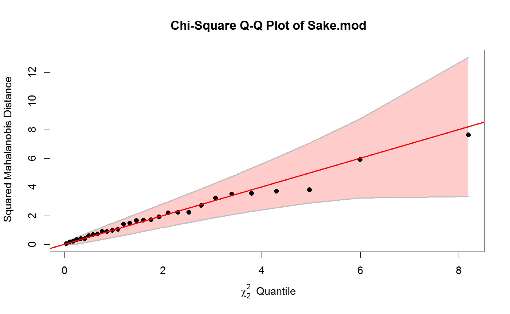
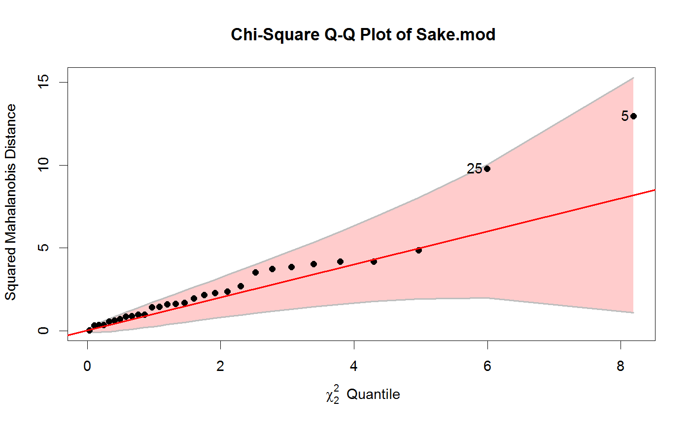

Chi Square Quantile-Quantile plots
A chi square quantile-quantile plots show the relationship between data-based
values which should be distributed as \(\chi^2\) and corresponding quantiles
from the \(\chi^2\) distribution. In multivariate analyses, this is often used both
to assess multivariate normality and check for outliers, using the
Mahalanobis squared distances (\(D^2\)) of observations from the centroid.
cqplot is a more general version of similar functions
in other packages that produce chi square QQ plots.
It allows for classical Mahalanobis squared distances
as well as robust estimates based on the MVE and MCD;
it provides an approximate confidence (concentration) envelope around the
line of unit slope, a detrended version, where the reference line
is horizontal, the ability to identify or label unusual points,
and other graphical features.
The method for "mlm" objects applies this to the residuals from
the model.
cqplot(x, ...) # S3 method for mlm cqplot(x, ...) # S3 method for default cqplot(x, method = c("classical", "mcd", "mve"), detrend = FALSE, pch = 19, col = palette()[1], cex = par("cex"), ref.col = "red", ref.lwd = 2, conf = 0.95, env.col = "gray", env.lwd = 2, env.lty = 1, env.fill = TRUE, fill.alpha = 0.2, fill.color = trans.colors(ref.col, fill.alpha), labels = if (!is.null(rownames(x))) rownames(x) else 1:nrow(x), id.n, id.method = "y", id.cex = 1, id.col = palette()[1], xlab, ylab, main, what=deparse(substitute(x)), ylim, ...)
Arguments
| x | either a numeric data frame or matrix for the default method, or
an object of class |
|---|---|
| … | Other arguments passed to methods |
| method | estimation method used for center and covariance, one of:
|
| detrend | logical; if |
| pch | plot symbol for points Can be a vector of length equal to the number of rows in |
| col | color for points; the default is the first entry in the current color palette
(see |
| cex | character symbol size for points. Can be a vector of length equal to the number of rows in |
| ref.col | Color for the reference line |
| ref.lwd | Line width for the reference line |
| conf | confidence coverage for the approximate confidence envelope |
| env.col | line color for the boundary of the confidence envelope |
| env.lwd | line width for the confidence envelope |
| env.lty | line type for the confidence envelope |
| env.fill | logical; should the confidence envelope be filled? |
| fill.alpha | transparency value for |
| fill.color | color used to fill the confidence envelope |
| labels | vector of text strings to be used to identify points,
defaults to |
| id.n | number of points labeled. If |
| id.method | point identification method. The default |
| id.cex | size of text for point labels |
| id.col | color for point labels |
| xlab | label for horizontal (theoretical quantiles) axis |
| ylab | label for vertical (empirical quantiles) axis |
| main | plot title |
| what | the name of the object plotted; used in the construction of |
| ylim | limits for vertical axis. If not specified, the range of the confidence envelope is used. |
Details
The calculation of the confidence envelope follows that used in the SAS program, http://www.datavis.ca/sasmac/cqplot.html which comes from Chambers etal. (1983), Section 6.8.
The essential formula is $$ SE ( z_{(i)} ) = \frac{\hat{\delta}}{g ( q_i )) \times \sqrt{ frac{ p_i (1-p_i} }{n}} $$ where \(z_{(i)}\) is the i-th order value of \(D^2\), \(\hat{\delta}\) is an estimate of the slope of the reference line obtained from the corresponding quartiles and \(g(q_i)\) is the density of the chi square distribution at the quantile \(q_i\).
Note that this confidence envelope applies only to the \(D^2\)
computed using the classical estimates of location and scatter.
The car::qqPlot() function provides for simulated envelopes,
but only for a univariate measure.
Oldford (2016) provides a general theory and methods for
QQ plots.
Value
Returns invisibly the
vector of squared Mahalanobis distances corresponding to the rows of x
or the residuals of the model.
References
J. Chambers, W. S. Cleveland, B. Kleiner, P. A. Tukey (1983). Graphical methods for data analysis, Wadsworth.
R. W. Oldford (2016), "Self calibrating quantile-quantile plots", The American Statistician, 70, 74-90.
See also
Mahalanobis for calculation of Mahalanobis squared distance;
qqplot;
qqPlot can give a similar result for Mahalanobis squared distances
of data or residuals;
qqtest has many features for all types of QQ plots.
Examples
cqplot(iris[, 1:4])iris.mod <- lm(as.matrix(iris[,1:4]) ~ Species, data=iris) cqplot(iris.mod, id.n=3)#> 132 135 118 #> 150 149 148# Adopted data Adopted.mod <- lm(cbind(Age2IQ, Age4IQ, Age8IQ, Age13IQ) ~ AMED + BMIQ, data=Adopted) cqplot(Adopted.mod, id.n=3)cqplot(Adopted.mod, id.n=3, method="mve")# Sake data Sake.mod <- lm(cbind(taste, smell) ~ ., data=Sake) cqplot(Sake.mod)cqplot(Sake.mod, method="mve", id.n=2)# SocialCog data -- one extreme outlier data(SocialCog) SC.mlm <- lm(cbind(MgeEmotions,ToM, ExtBias, PersBias) ~ Dx, data=SocialCog) cqplot(SC.mlm, id.n=1)# data frame example: stackloss data data(stackloss) cqplot(stackloss[, 1:3], id.n=4) # very strangecqplot(stackloss[, 1:3], id.n=4, detrend=TRUE)cqplot(stackloss[, 1:3], id.n=4, method="mve")cqplot(stackloss[, 1:3], id.n=4, method="mcd")